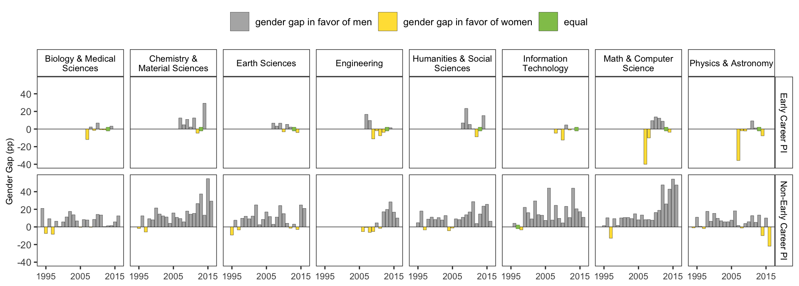

STI 2023 Poster Paper
Uncovering Barriers for Women in Russian Grant Funding: Rejected and Supported Grant Applications
Table S1. Gender assignment and number of grant applications by gender.
| Field | Overall (N=409715) |
|---|---|
| female | 79933 (19.5%) |
| male | 246728 (60.2%) |
| unknown | 83054 (20.3%) |
Gender assignment. Female-specific endings of family names include “-ва”, “-ая”, “-на”. Male-specific endings of family names include “-ов”, “-ий”, “-ин”, “-ев”, “-ый.”
Figure S1. Gender assignment and number of grant applications by gender.
Non-Event/Pubs Goals
Event/Pubs Goals
